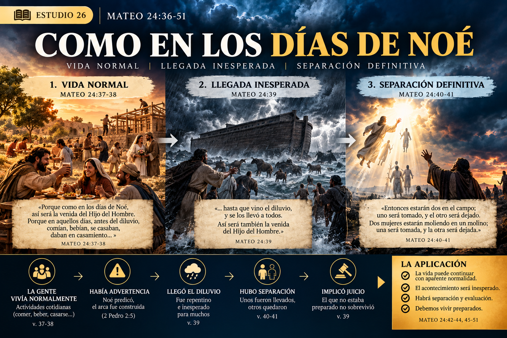
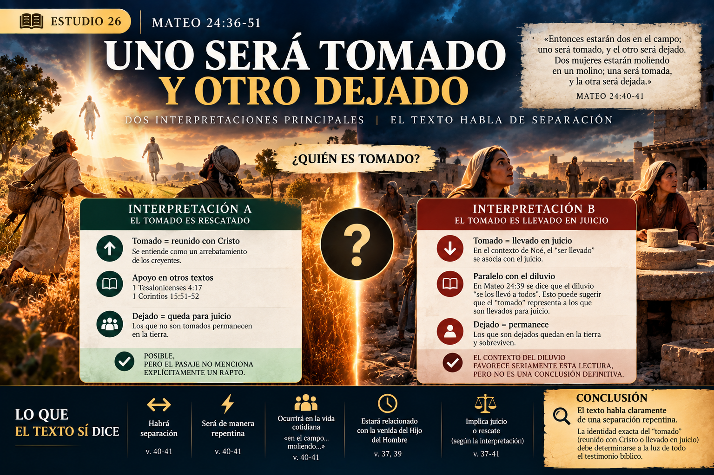
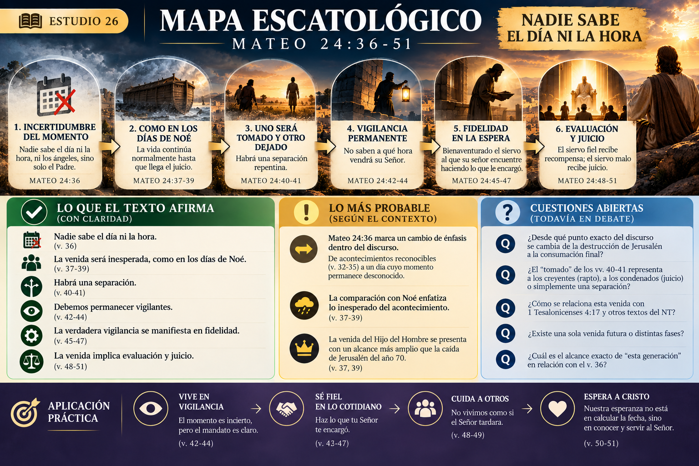

📖 ESTUDIO 26 — MATEO 24:36–51
«Nadie sabe el día ni la hora»
💡 Idea central
Después de afirmar que ciertas cosas podían reconocerse al acercarse —«cuando vean todas estas cosas» (24:33)— Jesús introduce una afirmación sorprendente:
«Pero del día y la hora nadie sabe… sino solo mi Padre.»
Mateo 24:36
El énfasis cambia. Jesús ya no dirige a sus discípulos a calcular fechas, sino a vivir preparados.
🔎 Pregunta clave: ¿De qué «día y hora» está hablando Jesús, y qué relación tiene con todo lo anterior?
1. 📍 El contexto inmediato
Mateo 24:36 no aparece aislado. Debemos leerlo después de 24:32–35.
Jesús acaba de enseñar la parábola de la higuera: cuando sus ramas se ponen tiernas y brotan las hojas, se sabe que el verano está cerca. Luego aplica la imagen:
«Así también ustedes, cuando vean todas estas cosas, sepan que está cerca, a las puertas.»
Después añade:
«De cierto les digo que no pasará esta generación hasta que todo esto suceda.»
Y entonces:
«Pero del día y la hora nadie sabe…»
🔤 Una expresión importante
Περὶ δὲ τῆς ἡμέρας ἐκείνης καὶ ὥρας
Perì dè tēs hēméras ekeinēs kai hōras
Puede traducirse: «Pero acerca de aquel día y hora…»
La construcción περὶ δέ — perì dé introduce un nuevo aspecto del discurso y posiblemente una transición temática. Sin embargo, por sí sola no demuestra que Jesús esté hablando de un acontecimiento completamente distinto.
Una tensión deliberada
| Mateo 24:32–35 | Mateo 24:36–44 |
|---|---|
| «cuando vean estas cosas» | «nadie sabe» |
| reconocer cercanía | desconocer el momento |
| «esta generación» | «día y hora» |
| señales observables | vigilancia permanente |
🟢 Muy fuerte: hay un cambio claro de énfasis en el v. 36.
🟠 Disputado: que ese cambio implique necesariamente pasar de la destrucción de Jerusalén a la Segunda Venida.
2. ⏳ «Nadie sabe»
«Nadie sabe… ni los ángeles de los cielos… sino solo mi Padre.»
Una tradición textual antigua incluye además «ni el Hijo», frase que aparece inequívocamente en el paralelo de Marcos 13:32. El punto principal permanece intacto: el momento exacto pertenece al conocimiento del Padre.
Esto confronta directamente la tendencia a intentar calcular la fecha exacta del cumplimiento. Jesús no entrega una fórmula cronológica secreta. Entrega un mandato:
«Velad.»
3. 🌊 Los días de Noé
«Porque como en los días de Noé, así será la venida del Hijo del Hombre.»
Aquí aparece nuevamente una palabra importante:
παρουσία — parousía
Significa venida, llegada o presencia. Ya apareció en Mateo 24:3 cuando los discípulos preguntaron por la parousía de Jesús. Ahora vuelve explícitamente en los vv. 37 y 39.
¿Qué tenían de especial los días de Noé? Jesús dice que comían, bebían, se casaban y daban en casamiento. Nada de esas actividades es pecaminoso en sí mismo.
El punto inmediato es la normalidad de la vida antes de la irrupción del juicio. La gente continuaba viviendo normalmente hasta que llegó el diluvio.
🟢 Muy fuerte: la comparación con Noé enfatiza especialmente lo inesperado del acontecimiento.
4. ⚠️ «No entendieron hasta que vino el diluvio»
Mateo 24:39 dice que no comprendieron lo que estaba ocurriendo hasta que vino el diluvio.
Inesperado no significa necesariamente sin advertencia.
Noé existía. El arca existía. Pero la generación continuó viviendo como si nada fuera a suceder. Por eso el problema no es simplemente falta de información, sino falta de preparación.

5. 👥 «Uno será tomado y el otro será dejado»
«Entonces estarán dos en el campo; uno será tomado, y el otro será dejado. Dos mujeres estarán moliendo en un molino; una será tomada, y la otra será dejada.»
Este pasaje suele relacionarse inmediatamente con el rapto. Pero debemos detenernos.
❓ ¿El texto dice explícitamente que el tomado es salvo? No.
❓ ¿Dice que el dejado es condenado? Tampoco.
El texto describe claramente una separación repentina, pero no identifica explícitamente en estas frases el destino de cada persona.
6. 🧐 ¿Quién es tomado?
Interpretación A — El tomado es rescatado
Esta lectura entiende: tomado → reunido con Cristo; dejado → queda para juicio. Puede relacionarse teológicamente con textos como 1 Tesalonicenses 4:17.
🟠 Posible: pero Mateo 24:40–41 no menciona explícitamente un rapto.
Interpretación B — El tomado es llevado en juicio
El contexto de Noé permite otra lectura. Jesús acaba de decir que el diluvio «se los llevó a todos» y luego habla de uno tomado y otro dejado.
Sin embargo, Mateo utiliza verbos griegos diferentes en 24:39 y 24:40. Por tanto, no podemos afirmar que sea exactamente la misma expresión.
🟡 Probable: el contexto del diluvio favorece seriamente una lectura judicial de la separación.
🟠 Disputado: la identidad exacta del «tomado» continúa abierta.

7. 👀 El verdadero mandato: «Velad»
«Por tanto, estén atentos, porque no saben a qué hora ha de venir su Señor.»
γρηγορέω — grēgoreō
Significa estar despierto, mantenerse alerta, vigilar.
Aquí descubrimos algo fundamental: Jesús no dice «por tanto, calculen». Dice «por tanto, velen».
🟢 Muy fuerte: la incertidumbre cronológica no pretende producir especulación, sino fidelidad.
8. 🏠 El ladrón en la noche
Jesús ofrece otra pequeña parábola. Si el dueño de una casa supiera cuándo vendrá el ladrón, estaría preparado. Pero precisamente porque no conoce la hora, debe permanecer vigilante.
«Por tanto, también ustedes estén preparados, porque el Hijo del Hombre vendrá a la hora que no piensan.»
El NT reutilizará esta imagen. Pablo afirma en 1 Tesalonicenses 5:2 que el día del Señor vendrá como ladrón en la noche. La comparación no atribuye a Cristo las características morales de un ladrón: el punto es la llegada inesperada.
9. 🧮 Entonces, ¿se puede calcular la fecha?
Mateo 24:36–44 hace extremadamente difícil justificar cualquier sistema que pretenda determinar con precisión el día, la hora o una fecha exacta de la venida.
v. 36 — nadie sabe
v. 42 — ustedes no saben
v. 44 — vendrá cuando no lo esperan
v. 50 — llegará cuando el siervo no lo espera
Esto no significa que toda reflexión escatológica sea inútil. Jesús mismo está enseñando escatología. La diferencia es:
Estudiar los acontecimientos bíblicos ≠ calcular fechas que Jesús no reveló.
10. 🧑🌾 El siervo fiel
Mateo 24:45 introduce una nueva parábola. Un señor deja a un siervo encargado de su casa.
¿Qué caracteriza al buen siervo? No está mirando constantemente por la ventana intentando calcular cuándo regresará su señor. Está haciendo lo que su señor le encargó.
«Bienaventurado aquel siervo al cual, cuando su señor venga, lo halle haciendo así.»
Esperar a Cristo significa obedecer a Cristo.
11. 🍷 El problema del siervo malo
«Mi señor tarda en venir.»
Ese pensamiento produce un cambio moral: comienza a maltratar a los demás, abusar de su autoridad y vivir irresponsablemente.
El problema no es simplemente una cronología escatológica equivocada. La aparente demora del señor revela lo que realmente hay en su corazón.
Este tema será importante en Mateo 25: la demora aparece nuevamente en las diez vírgenes y en otras parábolas de espera. Mateo 24:45–51 funciona así como puente hacia el capítulo siguiente.
12. ⚖️ La venida implica evaluación
Siervo fiel
Es encontrado cumpliendo su responsabilidad.
Resultado: recompensa.
Siervo malo
Es encontrado abusando de los demás.
Resultado: juicio.
«Allí será el lloro y el crujir de dientes.»
🟢 Muy fuerte: la venida del señor no es presentada simplemente como un acontecimiento cronológico. Es también un momento de rendición de cuentas.
13. 🔄 ¿Mateo 24:36 comienza un acontecimiento diferente?
Esta es probablemente la cuestión exegética más importante del estudio.
A. Cambio completo
Mateo 24:4–35 se referiría principalmente a la destrucción de Jerusalén en el año 70. Desde 24:36 Jesús pasaría a hablar de su Segunda Venida final.
A favor: contraste entre «estas cosas» y «aquel día», cambio hacia desconocimiento temporal, aparición explícita de la parousía y comparación con Noé.
🟡 Probable: contextualmente plausible y bastante fuerte.
Pero el texto nunca dice explícitamente: «Ahora cambio de tema y comienzo a hablar de otro acontecimiento».
B. Continuidad completa
Todo Mateo 24:4–51 continuaría describiendo principalmente el juicio sobre Jerusalén. La incertidumbre del día exacto sería compatible con saber que ocurriría dentro de aquella generación.
🟠 Disputado: posición posible, especialmente en lecturas preteristas.
Su dificultad principal es explicar adecuadamente el lenguaje de la parousía y el alcance de las imágenes posteriores sin reducir indebidamente la expectativa futura del NT.
C. Horizonte profético entrelazado
La caída de Jerusalén funcionaría como juicio histórico cercano, mientras el lenguaje conduce también hacia la venida definitiva del Hijo del Hombre.
🟡 Probable: también encaja bien con la naturaleza profética del discurso.
Debe evitar convertirse en una solución donde cada versículo pueda trasladarse arbitrariamente entre el año 70 y el futuro.
14. 🔍 Algo que el texto sí deja clarísimo
Aunque discutamos a qué acontecimiento corresponde exactamente cada sección, el propósito pastoral de Mateo 24:36–51 es mucho más claro.
INCERTIDUMBRE DEL MOMENTO
↓VIGILANCIA
↓FIDELIDAD
↓REGRESO DEL SEÑOR
↓EVALUACIÓN
15. ✝️ El centro no es la fecha: es Cristo
La escatología puede convertirse fácilmente en obsesión por cronologías. Pero Jesús dirige la atención hacia algo diferente.
La pregunta fundamental no es:
«¿Puedes descubrir cuándo vendrá?»
Sino:
«¿Cómo te encontrará cuando venga?»
El siervo fiel no conoce la fecha, pero conoce a su Señor. Y precisamente por eso permanece fiel.
La esperanza cristiana no consiste en descubrir información que el Padre decidió no revelar. Consiste en esperar al Hijo del Hombre que vendrá.
📊 Evaluación de conclusiones
| Afirmación | Evaluación |
|---|---|
| Nadie conoce el día y la hora | 🟢 Muy fuerte |
| Jesús excluye la fijación de fechas exactas como objetivo de su enseñanza | 🟢 Muy fuerte |
| La comparación con Noé enfatiza lo inesperado del acontecimiento | 🟢 Muy fuerte |
| Mateo 24:36 introduce un cambio de énfasis | 🟢 Muy fuerte |
| La vigilancia significa principalmente fidelidad, no cálculo cronológico | 🟢 Muy fuerte |
| La venida implica separación y juicio | 🟢 Muy fuerte |
| El v. 36 comienza específicamente la Segunda Venida futura | 🟡 Probable |
| Mateo 24:36–51 sigue refiriéndose exclusivamente al año 70 | 🟠 Disputado |
| El «tomado» representa necesariamente al creyente raptado | 🟠 Disputado |
| El «tomado» representa necesariamente al condenado | 🟠 Disputado |
| Podemos calcular la fecha de la venida usando señales bíblicas | 🔴 Muy débil frente al énfasis del pasaje |
🧭 Mapa Escatológico — actualización del Estudio 26
🟢 AFIRMADO
Cristo / el Hijo del Hombre vendrá
↓
el momento exacto no es conocido por los discípulos
↓
su llegada tendrá carácter inesperado
↓
habrá separación / evaluación
↓
los discípulos deben permanecer vigilantes
↓
la verdadera vigilancia se manifiesta en fidelidad.
🟡 PROBABLE
Mateo 24:36 parece marcar una transición desde acontecimientos reconocibles relacionados con «estas cosas» hacia el día cuyo momento permanece desconocido.
❓ TODAVÍA ABIERTO
¿Dónde exactamente cambia el discurso del año 70 a la consumación final?
¿Los vv. 40–41 describen el rapto, juicio o simplemente separación?
¿Cómo se relaciona esta parousía con 1 Tesalonicenses 4?
¿Existe una sola venida futura o distintas fases?
No necesitamos resolverlo todavía. Los próximos estudios aportarán más evidencia.

💡 Conclusión
Mateo 24:36–51 transforma la escatología en discipulado.
Jesús no responde a la incertidumbre diciendo «investiguen hasta descubrir la fecha». Dice:
«Velad.»
Y luego explica cómo luce esa vigilancia: un siervo que sigue alimentando la casa, sirviendo y obedeciendo aunque el señor parezca tardar.
No sabemos cuándo vendrá el Señor; sí sabemos cómo quiere encontrarnos.
La respuesta cristiana ante la venida de Cristo no es especulación, sino fidelidad.